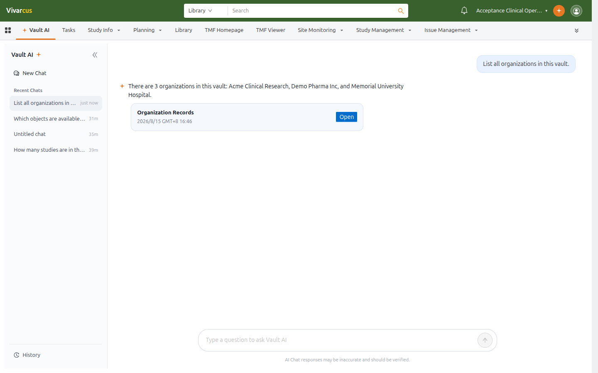

Starting a Conversation
Open the Vault AI tab in the application tab bar. The left sidebar shows Recent Chats; click New Chat to start a fresh conversation, or click History to browse all conversations and jump into one.
Ask questions in natural language, for example:
- "How many studies are in this vault?"
- "Find documents updated in the last 7 days"
- "Show my pending workflow tasks"
Vault AI decides which objects and fields to query. When more context is needed, it asks a clarifying question first (e.g. which business area you care about) before running the query.
Record Cards in Answers
Query answers include record cards: each card names the record source and time, and an Open button jumps to the pre-filtered record list where you can verify details.

*Asking for organizations — Vault AI answers with a list and a records card.*
Suggested Questions
Click Suggested above the input to expand example questions, generated for the current Vault. Click one to ask it directly — a quick way to explore what Vault AI can do.
Task Execution Status
The Tasks button above the input shows how many action tasks Vault AI is executing, updating live while a task runs. Click it to view execution details.
Tips
- The AI Chat responses may be inaccurate and should be verified notice always applies; confirm critical data on the record detail page.
- Conversations are kept long-term under History; starting a new chat never deletes earlier ones.
- On a record detail page, questions are scoped to that record — see Using Vault AI in Record Context.